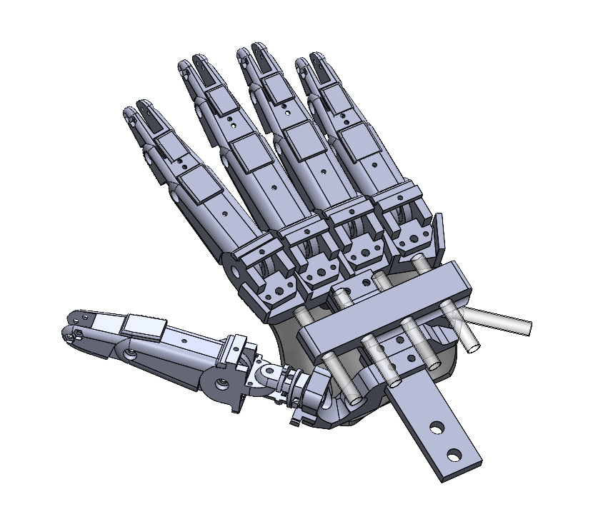

The first step was to derive the lengths and kinematic relationships of each link/finger as shown to the left. In this model, there are 20 degrees of freedom in total - there are other biomechanical models that use additional degrees of freedom for the thumb, however due to the limitations of the PCA9685 servo controller module this model would suffice.
A particular challenge is ensuring sufficient spring force within each link to resist against the tension force induced by retracting the tendon. Thin dental elastics were used and routed through each link as shown. These forced the link in a fully extended resting state when no actuation occurs.
Finger linkages consist of a distal (tip), intermediate (middle), and proximal (base) bone where the ends of the proximal link can rotate about the z-axis with a limited splay range which is controlled via hard stops. To prevent the joints from hyperextending a rigid flap was incorporated on top of each link to keep them flat. In addition, the tendons were carefully offset from the joints in the y-plane to ensure a moment is created about the base of each link which creates a smoother contraction when tension is applied.
All joints aside from the T3 thumb base link use a simple nut-bolt connection to allow rotation. A 16mm roller bearing was used for the T3 link to minimize friction and accidental loosening of the fastener when it is actuated.
The hand is driven by a combination of MG996R and SG90 servos. MG996R's are bulky but provide sufficient grip strength for opening/closing links. SG90 servos are used to actuate splay (limited torque requirement). A mounting bracket that allows the each of the tendons to attach to it's respective servo and move without interfering with the other tendons. As can be seen in the above image, the tendons for each finger are routed via a tube so they do not get tangled, these tubes directly attach to the mounting bracket so tension is constant and the servos do not need to keep being adjusted.
An Arudino Uno was selected to control the Servos along with a PCA9685 servo driver. I spent a while trying to debug my PCA9685 board as PWM wasn't behaving as expected before I realized the board was faulty and I needed a new one! Each MG996R servo operates at approximately 500-900 mA with a stall torque of 2.5A, and SG90 from 100-250 mA and stalling at 700 mA.
Theoretically I would require in the worst case a 28.5 A, 6V source (171 W). However, assuming nominal operating ranges (by implementing soft angular stops in code) my 10A power source would suffice (10.25A theoretical max non-stall/inrush operating current).
All components were 3D printed using a combination of PLA and TPU. Aluminum extrusions were used to create a test fixture to mount the hand and servos. As can be seen by the tubing, the hand and servos can be completely decoupled allowing for flexibility in design in a larger robotic system.
Multiple iterations were used to prototype the design and determine part fit/interferences.
A significant challenge with controlling the angular position of each link is obtaining an accurate transfer function that does not rely on any feedback for error correction (additional angular sensors are expensive!). I chose to experimentally derive the servo-joint angle relationship through varying the servo angle(s) from 0 to ~180 degrees and record each of the Euler joint angles for each link.
This was achieved via Open CV which used a series of colored nodes on each of the joints to then compute the angles. As can be seen to the right, a polynomial was then fit to the experimental test data which allowed for control based upon the desired input angles.
Test setup for linkage-motor characterization

Testing derived relationship on single finger via OpenCV hand detection
The Meta Quest VR headsets use OpenXR to track hand movements and gestures. A custom scene was developed using Unity Engine with the OpenXR Hand camera rig to track joint angles and movements. An earlier tracker used Google's MediaPipe Hand's however given the limitations of my computer's webcam, there was a significant level of uncertainty/error within the angles computed as part of the hand was hidden - thus the VR OpenXR approach was selected going forward.
The resolved joint data is sent to an intermediary Python script which handles desired angle to servo conversion and sends it via serial to the Arduino which converts the angles into PWM signals for the respective motors. A smoothing algorithm was implemented by remove noise and prevent rapid switching/current spikes.
It is planned to further develop the Unity environment to track objects held by the robotic hand a render them to give users seamless real-time control independent of viewing the actual hand.

Free AI Website Creator